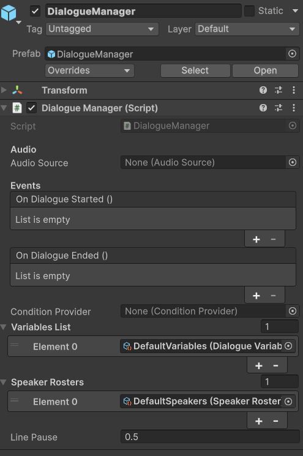

API Reference
Complete reference for all public types, methods, properties, and events in Threader. For walkthroughs and examples, see the per-topic pages. This page is the definitive source for signatures and behaviour details.
DialogueManager
DialogueManager : MonoBehaviour
Singleton. Add one to your scene. All interaction with the dialogue system goes through this class.
Singleton access
DialogueManager.Instance // null when no manager exists in the scene
Inspector fields

| Field | Type | Description |
|---|---|---|
audioSource |
AudioSource |
2D fallback audio source. Auto-created if not assigned. |
conditionProvider |
ConditionProvider |
Optional. Assigned providers are forwarded to ConditionService.SetProvider in Awake. |
_variablesList |
List<DialogueVariables> |
Assets searched in order for variable lookups. Exposed as VariablesList. |
_speakerRosters |
List<SpeakerRoster> |
Assets that populate speaker dropdowns in the editor. Exposed as SpeakerRosters. |
linePause |
float |
Seconds to wait after each NPC line before advancing. Default: 1. |
OnDialogueStarted |
UnityEvent |
Inspector-wired event fired when dialogue starts. |
OnDialogueEnded |
UnityEvent |
Inspector-wired event fired when dialogue ends. |
Events (C# subscriptions)
Subscribe in OnEnable, unsubscribe in OnDisable.
// Each dialogue line as it becomes current.
event Action<NPCLine> OnNPCLine;
NPCLine.Text— fully resolved text (variable tokens already substituted)NPCLine.Clip— optionalAudioClip. May be null.
// Every node event fired from any NPC node (local + global).
event Action<string> OnNodeEvent;
Guard with CurrentActor to scope handling to a specific NPC:
manager.OnNodeEvent += key => {
if (manager.CurrentActor != myNpc) return;
HandleEvent(key);
};
// Only events marked Global on the NPC node.
event Action<string> OnGlobalNodeEvent;
No actor guard needed — these are intentionally broadcast to all listeners.
// A Player Choice node has become active.
// The list contains only the visible choices (IsHidden = false is filtered upstream).
event Action<List<ChoiceData>> OnChoiceNode;
Each ChoiceData in the list:
- Text — resolved display text
- IsLocked — true if unfulfilled non-hiding conditions; show greyed out
- IsHidden — true if a hiding condition failed (choice is not shown to player)
- ChoiceKey — "{nodeGuid}:{index}" for history lookups
// Dialogue has fully ended (after End node is processed).
event Action OnDialogueEnd;
// Dialogue is starting. Also fires OnDialogueStarted (UnityEvent) in parallel.
event Action OnDialogueStartedEvent;
Properties
| Property | Type | Description |
|---|---|---|
Instance |
DialogueManager |
Static singleton reference |
CurrentActor |
IDialogueActor |
The actor currently running dialogue. null between conversations. |
IsDialogueActive |
bool |
true while dialogue is running (blockables are blocked) |
ConditionProvider |
ConditionProvider |
The provider assigned in the Inspector (read-only) |
VariablesList |
IReadOnlyList<DialogueVariables> |
All assigned variable assets |
SpeakerRosters |
IReadOnlyList<SpeakerRoster> |
All assigned roster assets |
Methods
void StartDialogue(DialogueGraph graph, string entryPointKey = null, IDialogueActor actor = null)
Starts a dialogue. Resolves the entry point, fires OnDialogueStarted, blocks all registered blockables, then starts the runner. If any registered IDialogue also implements IDialogueReady, the runner waits until IsDialogueReady is true on all of them.
graph— must not be nullentryPointKey— empty/null = default start nodeactor— passed to the runner so End nodes can callactor.SetEntryPoint()
void SelectChoice(int index)
Tells the runner which choice the player made. Call from your choice button callbacks. index is the 0-based position in the list passed to OnChoiceNode. Calling with an out-of-range index is silently ignored.
void RegisterBlockable(IDialogue blockable)
void UnregisterBlockable(IDialogue blockable)
Register/unregister a component to receive Block() and Unblock() calls when dialogue starts and ends. Also used for IDialogueFocus (camera) and IDialogueReady (transition gate). Call Register in OnEnable and Unregister in OnDisable.
void RegisterSpeaker(string name, Transform t)
void UnregisterSpeaker(string name)
Register a named speaker. The name must match the Speaker Name field on NPC nodes in the graph. Used to:
- Position spatial audio at the speaker's world location
- Direct IDialogueFocus to look at the correct NPC mid-dialogue
NPCDialogue calls RegisterSpeaker in Start automatically. For DialogueTrigger, you do not need to register manually (it uses the trigger's own transform as a fallback). Register manually only for NPCs added dynamically at runtime.
void SetBlocked(bool value)
Manually block or unblock all registered blockables. Call if you need to freeze the player for reasons other than dialogue (e.g. a cutscene that runs alongside dialogue). Normally called internally.
Audio behaviour
- When a line has an
AudioClipand the speaker'sTransformis in the registry, the clip plays from a hidden spatialAudioSourcerepositioned to the speaker's world position (spatialBlend = 1,rolloffMode = Linear). - If no speaker transform is known, the clip plays from the 2D
audioSourcecomponent. - The runner waits for the clip to finish (
WaitWhile(() => audioSource.isPlaying)) before advancing.linePauseis applied after the clip ends. - When no clip exists, the runner waits for
DialogueUI.IsTypingto become false, then waitslinePauseseconds before advancing.
IDialogueActor
public interface IDialogueActor
{
DialogueGraph Graph { get; }
string ActiveEntryPointKey { get; }
void SetEntryPoint(string key);
void ResetEntryPoint();
void StartDialogue();
}
Implemented by NPCDialogue and DialogueTrigger. Implement on your own components if you have a custom interaction system. Gives quest scripts, cutscene scripts, and save systems a stable interface that doesn't depend on which NPC component is used.
| Member | Description |
|---|---|
Graph |
The DialogueGraph this actor runs. |
ActiveEntryPointKey |
Current entry point override. Null/empty = start node. |
SetEntryPoint(key) |
Switches the active branch for the next StartDialogue call. |
ResetEntryPoint() |
Clears the override (sets to null). |
StartDialogue() |
Starts dialogue from ActiveEntryPointKey. |
See Entry Points for patterns and save/restore detail.
IDialogue
public interface IDialogue
{
void Block();
void Unblock();
}
Implement on any component that should pause when dialogue is active — player movement, hotkeys, game menus, etc. Register with DialogueManager.RegisterBlockable.
IDialogueFocus
public interface IDialogueFocus
{
void FocusOn(Transform target);
void ReleaseFocus();
}
Implement alongside IDialogue on your player camera controller. When DialogueGraph.LookAtSpeaker = true and a speaker transform is registered, FocusOn is called each time a new NPC node is reached. ReleaseFocus is called when dialogue ends.
IDialogueReady
public interface IDialogueReady
{
bool IsDialogueReady { get; }
}
Implement alongside IDialogue when your blockable needs a moment to complete a transition (a camera cut, a fade-in) before the first line is displayed. DialogueManager.StartDialogue waits on WaitUntil(() => IsDialogueReady) for every registered blockable that also implements this interface before starting the runner.
NPCDialogue
NPCDialogue : MonoBehaviour, IDialogueActor
Drop on an NPC GameObject for code-driven interaction (the dialogue is started by your own input system rather than a trigger collider).
Inspector fields
| Field | Type | Description |
|---|---|---|
graph |
DialogueGraph |
The graph this NPC runs. |
speakerName |
string |
Must match the Speaker Name set on NPC nodes. Registers this transform with DialogueManager.RegisterSpeaker. |
IsInteractable |
bool |
Public flag for your input system to check before calling StartDialogue. Not enforced internally. |
NodeEvents |
List<NodeEventResponse> |
Per-key UnityEvent responses for node events fired during this NPC's dialogue. |
Methods
| Method | Description |
|---|---|
StartDialogue() |
Calls DialogueManager.Instance.StartDialogue(graph, _activeEntryPointKey, this). |
SetEntryPoint(string key) |
Stores key for next StartDialogue. |
ResetEntryPoint() |
Clears the stored key. |
NPCDialogue subscribes to DialogueManager.OnNodeEvent in Start(). When an event fires with a key matching an entry in NodeEvents, the corresponding UnityEvent is invoked. This allows per-NPC event responses without any custom C#.
DialogueTrigger
DialogueTrigger : MonoBehaviour, IDialogueActor
Drop on an NPC with a trigger Collider. Handles collision detection and player input natively.
Inspector fields
| Field | Type | Description |
|---|---|---|
graph |
DialogueGraph |
The graph to run. |
playerTag |
string |
Tag that identifies the player. Default: "Player" |
interactKey |
KeyCode |
Key to press when in range. Default: E. Ignored if startOnEnter is true. |
startOnEnter |
bool |
Start dialogue immediately when player enters trigger zone. |
interactPrompt |
GameObject |
Optional UI prompt shown when player is in range (e.g. "Press E"). |
activeEntryPointKey |
string |
Serialized in the scene. Edit at design time to start partway through a graph. |
Validation
On Start(), ValidateSetup() runs:
- Warns if no trigger Collider or Collider2D found on this or children
- Warns if no Rigidbody or Rigidbody2D found (required for OnTriggerEnter)
- Warns if no DialogueGraph assigned
Methods
void TriggerDialogue()
Safe to call from a UnityEvent, animation event, or external script. Guards against null manager/graph and logs errors if either is missing.
DialogueGraph
DialogueGraph : ScriptableObject
Create via Assets → Create → Threader → Dialogue Graph.
Inspector fields
| Field | Type | Description |
|---|---|---|
Nodes |
List<DialogueNode> |
All nodes in the graph (SerializeReference) |
StartNodeGuid |
string |
GUID of the default start node |
DefaultSpeakerName |
string |
Fallback speaker name for NPC nodes with no speaker override |
LookAtSpeaker |
bool |
When true, calls IDialogueFocus.FocusOn on the speaking NPC's transform |
EntryPoints |
List<DialogueEntryPoint> |
Named entry points. Set via right-click in the editor. |
Groups |
List<DialogueGroupData> |
Comment boxes (editor-only) |
StickyNotes |
List<StickyNoteData> |
Sticky notes (editor-only) |
Methods
string ResolveEntryPointGuid(string key)
Returns the node GUID for key. Falls back to StartNodeGuid if key is null, empty, or not found. Logs a warning (not an error) on fallback when a non-empty key was supplied. Called by DialogueManager.StartDialogue.
DialogueVariables
DialogueVariables : ScriptableObject
Create via Assets → Create → Threader → Variables Store.
Inspector fields
| Field | Type | Description |
|---|---|---|
Variables |
List<DialogueVariable> |
Design-time defaults. Each entry has Name, Type, DisplayName, and a value field. |
Methods
void InitRuntime()
Copies design-time defaults into runtime dictionaries. Call explicitly to reset all variables (new game). Called automatically on first access if not called manually.
bool GetBool(string name)
int GetInt(string name)
string GetString(string name)
Returns the current runtime value. Default: false, 0, "" if the name is not found. Calls EnsureInit() automatically.
void SetBool(string name, bool value)
void SetInt(string name, int value)
void SetString(string name, string value)
Writes to the runtime dictionary. Logs a warning if the name doesn't exist in the design-time list or if the type doesn't match. Calls EnsureInit() automatically.
string GetDisplayName(string name)
Returns DialogueVariable.DisplayName if non-empty, otherwise returns name. Used by {varName:name} text substitution tokens.
VariableType? GetVariableType(string name)
Returns the type enum, or null if the name is not in the design-time list.
string GetValueAsString(string name)
Returns the current runtime value as a string, or "(not found)" if the name doesn't exist.
Runtime lifecycle
- Runtime dictionaries are private, non-serialized. Play-mode changes never write back to the
.assetfile. - When the asset is unloaded (
OnDisable),_initialisedis reset tofalse— the next access callsInitRuntimeagain from defaults. - Multiple
DialogueVariablesassets can be assigned toDialogueManager.VariablesList. Variable name lookups search assets in list order. If two assets have the same name, only the first is found.
SpeakerRoster
SpeakerRoster : ScriptableObject
Create via Assets → Create → Threader → Speaker Roster.
| Member | Description |
|---|---|
Speakers |
List<string> — all canonical speaker names |
bool Contains(string name) |
Returns true if the name is in the list (case-sensitive) |
Assign one or more rosters to DialogueManager. Speaker fields in the graph editor become type-safe dropdowns populated from all assigned rosters combined.
ConditionService (static)
public static class ConditionService
Routes condition evaluation from the graph runner to your game code.
Property
static ConditionProvider Provider { get; }
Returns the active provider. If none was explicitly set, attempts Resources.Load<ConditionProvider>("DialogueSystem/DefaultConditionProvider").
Methods
static void SetProvider(ConditionProvider provider)
Explicitly assign a provider. Called by DialogueManager.Awake if one is assigned in the Inspector. Pass null to clear and allow Resources lookup.
static void Register(string conditionKey, Func<string, bool> evaluator)
static void Unregister(string conditionKey)
static void ClearDelegates()
Register/unregister inline delegates by key. The delegate receives the parameter string from the choice's Condition Parameter field.
Registeroverwrites any existing delegate for the same key (no duplicate protection beyond last-write-wins)Unregistersilently succeeds if the key is not registeredClearDelegatesremoves all entries — useful inOnDestroyof a manager object that owns many registrations
static bool Evaluate(ConditionDefinition definition, string parameter)
Resolution order:
1. VariableConditionDefinition — self-evaluates (no delegate/provider needed)
2. Registered delegate for definition.GetKey()
3. Active Provider.Evaluate(definition, parameter)
4. definition.WhenMissing fallback (Allow → true, Block → false + warning)
Returns true if definition is null.
ConditionProvider (abstract)
public abstract class ConditionProvider : ScriptableObject
{
public abstract bool Evaluate(ConditionDefinition definition, string parameter);
}
Subclass this to centralize condition evaluation in a single ScriptableObject. Assign the instance to DialogueManager.ConditionProvider or call ConditionService.SetProvider. Inside Evaluate, use definition.GetKey() and parameter to implement your routing logic.
ConditionDefinition
ConditionDefinition : ScriptableObject
Create via Assets → Create → Threader → Condition (Custom).
| Field | Description |
|---|---|
Key |
Lookup key. If empty, name (asset file name) is used. |
DisplayName |
Human-readable label in the editor. Falls back to name. |
Category |
Groups conditions in pickers as Category/Name. |
ParameterHint |
Tooltip on the parameter field in the graph. |
WhenMissing |
Allow (pass) or Block (fail) when no handler is registered. |
Methods
string GetKey() // Key ?? name
string GetDisplayName() // DisplayName ?? name
ConditionStore (static)
Optional in-memory key/value store for condition state. Pairs with ConditionStoreProvider.
static void Set(string key, string value)
static bool TryGet(string key, out string value) // false if key missing
static void SetInt(string key, int value)
static int GetInt(string key, int fallback = 0) // fallback if key missing or not a number
static void Remove(string key)
static void Clear()
No persistence — resets each time you enter Play mode. Repopulate from your game-state objects after loading a save.
DialogueChoiceHistory (static)
Tracks which choices the player has selected. Stored as a HashSet<string>.
static void MarkVisited(string choiceKey) // called by runner automatically
static bool IsVisited(string choiceKey) // query from quest/UI code
static void Clear() // call on new game
static string[] GetSaveData() // snapshot for save system
static void LoadSaveData(IEnumerable<string> keys) // restore — merges, not replaces
Key format: "{choiceNodeGuid}:{choiceIndex}". Stable unless the node is deleted/recreated or choices are reordered.
LoadSaveData merges with existing data. Call Clear() first if you want a clean slate before loading.
NPCLine (data class)
public class NPCLine
{
public string Text; // resolved display text (tokens substituted)
public AudioClip Clip; // may be null
}
Passed to OnNPCLine subscribers and DialogueUI.SetText.
ChoiceData (data class)
public class ChoiceData
{
public string Text; // resolved display text
public string NextNodeGuid; // internal routing — read-only
public List<VariableCondition> Conditions; // inline conditions
public ConditionDefinition ConditionDefinition; // custom condition asset
public string ConditionParameter; // parameter string
public bool NegateCondition; // invert custom condition result
public bool IsLocked; // true = show greyed out
public bool IsHidden; // true = don't show
public string ChoiceKey; // "{nodeGuid}:{index}"
}
The list passed to OnChoiceNode contains display copies — never the originals from the graph asset. Modifying these copies is safe and has no effect on the graph.
Variable substitution in text
DialogueManager.ResolveText(string text) and the equivalent in DialoguePreviewWindow handle {token} substitution.
| Token | Result |
|---|---|
{varName} |
Current runtime value of the variable named varName. Bool renders as "true" or "false" (lowercase). |
{varName:name} |
Display name of the variable (from DialogueVariable.DisplayName, falls back to varName). |
{unknownVar} |
Left as-is — visible in the game as an authoring hint |
Regex used: \{([^}:]+)(?::([^}]*))?\} (compiled, cached as a static field).
Applied to: NPC line text, choice text (as display copies — originals are never mutated).
DialogueEntryPoint
[Serializable]
public class DialogueEntryPoint
{
public string Key; // key used in SetEntryPoint / StartDialogue
public string NodeGuid; // target node
}
Stored on DialogueGraph.EntryPoints. Set via right-click → Set as Entry Point in the graph editor.
Enums
public enum VariableType { Bool, Int, String }
public enum SetOperator { Set, Add, Subtract, Toggle }
public enum WhenMissingBehaviour { Allow, Block }
public enum AnimatorParamType { Trigger, Bool, Int, Float }
public enum NodeType
{
Start, NPC, PlayerChoice, End,
Branch, SetVariable, Random, Jump,
Debug, Wait, FireEvent, PlayAudio, AnimatorTrigger
}